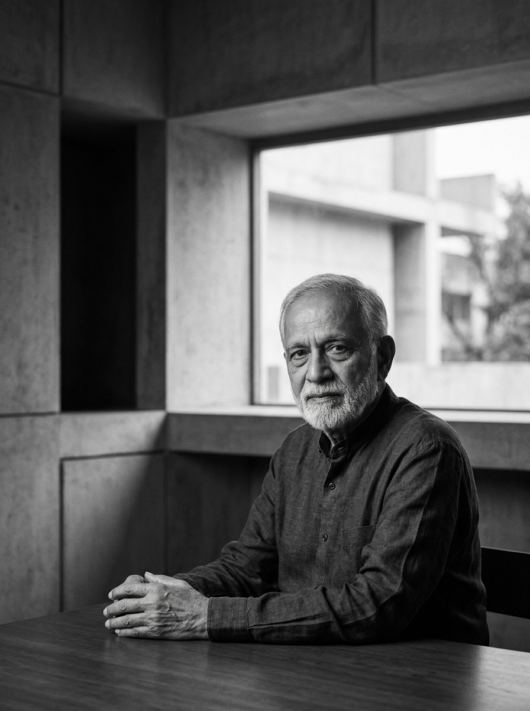

Founder & Principal Architect
Ar. Kirit B. Bhatt
Bachelor of Architecture, Sir J. J. School of Architecture, Mumbai — 1968
Started practice in Vapi in 1969. He served as Chairman of the Indian Institute of Architects, Gujarat Chapter for two consecutive terms and represented Dadra & Nagar Haveli in the Council of Architecture, New Delhi. He also served on the Executive Committee of the Indian Institute of Valuers, South Gujarat Branch, alongside various social organisations.